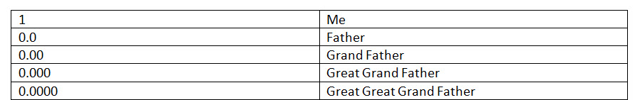

We all have experiences, and once we step outside the realm of what is "normal", or experiences take on a surreal aspect. Others, sometimes well-meaning, don't understand what you are trying to relate. And thus, you learn. You keep quiet and you don't share your experiences with anyone. But that really isn't healthy. The following is a personal narrative regarding PissedLizard's (Lovingly referred to as PL here on MM) personal experiences. He died, left his body, and entered the non-physical realms. If you read with an open mind, and then consider his experiences to be "puzzle pieces", you can use them to construct a fuller picture of where you are at in your own life and society. It's good stuff you all. -MM
I would like to explain the “light/void” concept as I experienced it and can communicate it.
I did not go anywhere.
First, I PHYSICALLY did not go anywhere.
I wasn’t “abducted” by a UFO.
I was here on this planet at my house. My consciousness left my physical body.
My physical body was here (in my house) annoying the crap out of my wife.
I wasn’t acting right. I wasn’t behaving right. Things were “off” about me.
For instance, I did not take care of my animals the way I normally do, I did not eat at all. And I was terribly thirsty. In fact, I drank 2 bottles of water.
Something was really “off”.
The Physical world around me was in turmoil
I became convinced that something was up.
Somehow, and in some way.
There was this hurricane barreling straight at us, it was more than just a physical hurricane. There was something different in the air. Something substantive. Something thick. Something that was “shaking everyone up”.
There is so much to say about the oppressive heat, the unbearable anxiety, and the huge buildup on all levels. I felt like I was a balloon inside a pressure cooker and I was about to *pop*.
The Build-up
At this point I will put in that for the last six months there have been waves of uncontrollable anxiety and heat.
The anxiety felt like waiting for the results of a very, very important and critical test.
All day.
Every day. It dragged on.
The heat. Lordy! The heat!
You can even see condensation coming off of me (if I was against a black background.)
It is feverish heat followed by chills. I would take my temperature and it would actually be below normal.
The Experience
Here is how I experienced the light and void.
Going into the light is a repeat of this planet but in a different timeline.
I have used this analogy before – you are put in a totally random human body. You can end up as Hunter Biden’s love child, born into a world where “everything is taken care of” or you can end up as a poor kid making sweaters for 20 cents each. Most, including myself would jump at the rich baby, but that human is given the same kind of “issues” the other kid has only presented differently.
So it all evens out.
As I said I spoke with and was allowed to experience what the Christian messiah went through because EVERYONE has to. That is what salvation actually means.
The Christ did say that this planet was sacred to him and his followers. This is why he has them stay.
This is where my personal confusion as to who is keeping us here, because to me it’s a prison.
Is it that God/Jesus or is it – a big lie the way “Alien Interview” described it.
It shouldn’t matter to me but it does.
He asked “Well, did you understand the experience?”
After I experienced that event, my Mantid asked me if I understood what just transpired.
Mantid = Angel. My Mantid = My Guardian Angel Different terms for the same thing. -MM
I explained what I thought transpired.
He then said that the one aspect of human life that I did not and will not experience is being a father.
And this is correct. I do not have kids.
I was then shown how to be a father and a dad.
And it was amazing, but not me.
I travel light. I hate to say it but I saw having children as being a hindrance to my life. I was very selfish that way.
No worries. In MAJestic I was forbidden to have children as well, and my first and second wives were both unable to conceive. It wasn't until I was "retired" from MAJestic that I was able to have children. I had my first daughter when I was 62. -MM
Upon Death and the light
Upon death when you are shown the light, if you don’t stop to look around you go to what is comfortable, which is the light.
I saw many people I know and met the Christian Jesus.
He showed me fatherly like love, and he let me be him.
Then, after all was finished he asked if I still wished to NOT go to the light or if I wanted to go somewhere else.
So I went into the light…
At this point I was scared to death. My Mantid took me into the light.
Once a person goes into the light THEY HAVE TO EXPERIENCE a “something” which I call “THE VOID”.
In other words there is no getting around it.
When you go into the light you go into the void first.
But, yah, there is another flash of light that gets much bigger.
Hell
Those who go to “hell” stay here in THE VOID for a bit.
But everyone WILL eventually get out of the void and be able to go into the “true” light afterwards.
And with that comes the mandatory amnesia…
…followed by placement in a unformed embryo.
The Alien interview said the amnesia was by a heavy voltage.
My interpretation was how you acted on this planet determines the voltage, but everyone experiences it as a static shock.
There is no punitive “Hitler gets a million volts while you get a few”.
The idea isn’t to punish but to grow.
My Mantid then showed me how to get out of the void and how to contact them if I get stuck.
A Second Chance
The Christ then even gave me a second chance to go with him.
I could go with him, into the light again keeping everything I have.
He said he only wanted me to be a better person.
I found this to be an extraordinarily nice gesture on his part.
But…
Before I go on to the void I have to say that those faithful Christians will be raptured. Of this I am certain. Just as it says in the Bible. Others in other religions WILL GO to where you believe heaven to be.
Heaven, or the idea of it, depends on the person.
My Mantid took me back into the void and this is where things really took off.
He showed me the light.
In it was the entire knowledge of the universe.
It was the most thrilling thing imaginable.
Every good feeling you have is there. It didn’t get boring.
No. Not at all. That’s for certain.
I was then shown that the light (if you take the PARTICLE form of light, not the waveform, but a photon) you would see it as light, but you can’t really “touch” a photon.
But a photon is how I was shown it all.
So I will explain it as best I can without being “all over the place”…
A Photon
Imagine a photon. Divide it in half and you get a pair or 1 “level”. If you divide that in half you will go all the way down to “strings” of energy – MM really explains it well in his articles.
When you get down to the last string to the quantum level you have a “hole”. It would look like a wall at your house with a big string hanging out of one side.
You see the wall and you see the string of energy going into that wall. It looks like a physical string into a hole.
If you go alllllll the way up to the hole and look through it – you would see that the string “disappears”.
This is where the particle and wave meet – at that hole.
That HOLE IS THE VOID!
Once your physical has been cut down to it’s wave form (0.000000000000000000000000000000000001 nm) you can tap into everything.
Everything.
Changes
This is where I know these two things to be true:
[1] My DNA was altered. How we think of DNA and what it really is are 2 different things.
I am a human male with no kids. My Y chromosome was “terminated” at this time and new DNA was inserted.
My DNA was cut not at my first human on the chain but past it to a primitive form, but it’s still a “relative”.
The Human species is a hybrid construction that has many evolutionary components and contributors. The DNA from one of the contributors was cut and an earlier progenitor was spliced into the space there. Thus a certain section of the DNA regressed to an earlier form. Ugh! -MM
I needed to feel this anger as when I was a kid in high school I got caught with my girlfriend by her father during an “intimate moment”. He lost his shit. Like went NUTS.
Because I have no daughters I could never feel that kind of anger but I needed to as my void in THIS life was being a father. He showed me how to control the anger.
I was then shown that each 0 in the quantum number of 0.0000000000000000000000000000000000001 Is a different “level” of our DNA and as the number gets smaller – you go back in “time” on your DNA.
For example 0.0000 is my great-great grandfather. The zero on the left side of the decimal point is me (or you) so writing this looks like:

At each “level” you have a quantum “hole” to tap into.
These are actual real people you are related to. It’s their “spirit” but they are still connected to you.
I had one LONG portion of my DNA removed and another put in.
However, my guess is if I was to do a DNA test it would look identical to an old one because that is the particle form not waveform.
If I was abducted by a UFO that would be particle form. Because I physically stayed here it’s waveform.
Some “UFO”s are actually biological entities (yes, the whole craft) and these can travel by wave or particle form.
I was then brought to the Gods and Goddesses and was shown why I had to study Islam.
Islam a quick study
In a quick QUICK nutshell -this is about Islam and can be looked up further- the Both Sunni and Shia believe in the end times. Their “messiah” is a child Imam who is in a vegetative state in a well in Qom, Iran. He is going to lead the MUSLIMS. His name is Imam al Mahdi.
The Mahdi has an enemy – his name is al Dajjal – it means “the deceiver” and will lead the Christians and Jews against the Mahdi. Like Jesus the Christ will.
The Dajjal (Christian Jesus) can be identified by having ONE EYE. He also survives a head shot.
So in MY mind – for years and years and years I thought the Mahdi was the Antichrist BUT thought the One eyed God, the ones the Muslims call the Dajjal – was “the good guy” and the Mahdi as “the bad guy”.
I thought that If the person or entity that the Muslims called “the antichrist” – it MUST be Jesus. So, the one eyed God – to me – had to be Jesus.
I worship the AllFather Odin. He is one of many Gods and Goddesses but he is the FATHER of the Gods and Goddesses. I am personally VERY religious when it comes to my Gods and Goddesses.
I take this stuff VERY seriously.
Then ZOOM…
Next, I am with all of the Gods and Goddesses and it’s just freaking awesome.
Odin literally came to me (not the other way around) and looked at me with that one eye of his…
… and two things happened…
… I went back INTO the void hole while staring at Odins eye, realizing that in order to know what God was I really had to know good versus evil.
He showed me (something otherwise obvious) but I did not understand then, that I needed to study something I hated (which at the time was, in fact, Islam) in order to come out the other end and be worthy of the Valhalla of my choosing.
The God with one eye was, in fact, a distraction to get me to learn what I needed to learn.
And I passed his test.
DNA comparability
NOW he said I had to be able to show that our DNA and Christian DNA is compatible.
I have to be able to translate the Eddas into Bible words so that everyone is on the same page and that I can HELP these people without the fear of them thinking I am satanic or something.
As MM said – yeah, the fundamentalism of the South and Baptism is on par with any other kind of fundamentalism- and that’s fine but I am to help not harm.
The problem is the way things are going elsewhere – how much human time do we have?
Anyone watching this fiasco and doesn’t see the writing on the wall – whether it’s all real or all a show – it’s just looking like things are moving faster than I can do everything and do THAT as well.
It’s all good though.
DNA reconfiguration
The DNA reconfigure was like this.
I was at a facility described by MM, I am not comfortable sharing where at this point but I was with my Mantid.
I was put on a table and he talked to others.
They then went through every feeling I ever had – like waking up Christmas morning – all the way to the feeling of defeat when I failed a big exam. Those feelings were removed and given – all of this WILLINGLY- to other humans that haven’t been born, this way they can “jump ahead” in life with my “books”.
I did this willingly as I have no children nor intend to.
My Y chromosome ends with this body and all my relatives agreed.
In that DNA space I was given knowledge.
I can access somethings but not others.
Seven Women
I was then brought to Seven women.
These are REALLY REALLY REALLY Important women according to my Mantid and I was to control my thoughts – in other words if I thought one was attractive – to keep that thought to myself.
My Mantid knows me.
These women took me into a circle and causally asked questions about my interactions with all kinds of things on earth.
Being honest to these women was difficult because it’s honesty – and it’s difficult, but I was absolutely brutally honest.
They asked – and all attention was on these answers – how or what I would do different given the knowledge I have.
When I my answer could have been better they showed me – by being the people at the moment I affected them – stopping time – the showing me the right way.
An APP and a Telephone
I am uncomfortable writing the rest of this interaction, but one of them showed me an app – YES – an APP to use to meditate to contact them.
I am learning how to use it.
Then my Mantid got me and he showed me how to call them if I ever need them.
He then showed me how the consciousness around me works.
He brought me back to the void and said [1] the amnesia given by the “old players” was lifted but [2] the access to the info is controlled.
We went into the void – I clicked out of it and was home – with a “Viking” and his son who were making a camp.
I was shown this so I could see distance in my bubble.
Science
Before “modern science” our ancestors saw things this way. Reality was in the bubble only. In quantum physics – reality is in the bubble only – that’s how they thought and maneuvered through the world. We lost that when we put our faith in “science”.
This lasted a while.
I learned a lot.
The Mantid gave me a cloth with XXXXX on it. He showed me how to distinguish it from the other smells in the cloth.
When he was satisfied – we moved on.
I hope this helps, especially Christians.
The whole light thing is a concept that is very important to them and I do not want this to scare them.
The entire time “Satan” was the enemy.
The manifestation of Satan was a reason to call the Mantids.
But it’s a manifestation of EVIL waves that cause the physical to appear.
My Mantid was clear – indication of evil was a clear cause to call more than My Mantid.
Anger!
And I am telling you – straight up – You feel the Mantids anger.
You live it.
I would never ever ever fuck with one of these things for anything, so although the concept of “Satan” creeps me out – even today – I know what happens when the Mantids are called and am leaving that there.
Coming out of the void…
Finally, coming out of the void and into this realm was like this:
Look at this character zero below:
0
The void is inside the zero. The outside of the zero – the line itself – is “reality” or A light (single)
When you are inside the zero all you have to do is say “I” and you become a person who can only say “I” – then the rest of the words come-but they have to be chosen carefully.
When I write “I think I am going to go to then store” has to be corrected to “I will go to the store” otherwise I am communicating that I am thinking about the store only.
This is driving my wife nuts, but it’s getting better.
Learning to speak takes a couple of full days.
Conclusion
Phew! As I have said, these other contributors have a world of experiences so unlike mine, but in some ways so vary familiar. I think that we can all take what is important to us and learn from PL experiences. Don’t you?
More on the way.
-MM